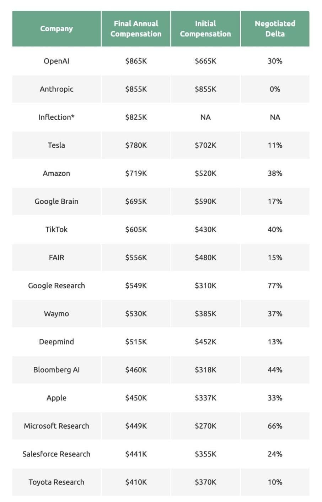

黃仁勳給年輕人的建議
~聽懂他的弦外之音
兼談AI科學家的超高「薪」情
這兩天引起許多人關注與議論的話題：
黃仁勳說：「Nvidia的工作是創造計算技術，讓所有的人都不需要編程，現在世界上每個人都是程式設計師，這就是奇蹟，人工智慧的奇蹟 !」
NVIDIA首次縮小了程式設計的技術鴻溝，正是讓大家意識到技術鴻溝已經彌合的絕佳時機!
黃仁勳被阿聯酋人工智慧部長問及「如果站在科技的前沿，人們到底應該學習什麼?」
黃仁勳回答：「學習電腦的時代過去了，生命科學是未來。」
或許大多數人都聚焦在黃的建議是否為年輕人學習與職業方向提供了明燈指引：「生命科學」即將成為接下來的黃金產業？！
（網路上許多人引自己或他人的經驗展開正反意見的辯論）
關於此我提醒一下，以黃的高度，他著眼的是未來科技發展的最「前沿」，而不是狹義的職業投報率分析。
其實聆聽這類名人的發言應掌握的是弦外之音。
黃仁勳委婉的語言下要傳遞的訊息是：
「照目前AI發展的速度搶著去擠計算機科學、程式設計領域在未來是危險的！
隨著AI的發展 人機介面必將會友善到一般水平的碼農 沒有存在的必要 ‼️
這領域的工作分佈未來只剩下M型的兩端：極少數領著高薪的高手與眾多替代性高的低薪工者。」
這幾天OpenAI的Sora震撼還餘波蕩漾，遭受衝擊的人們驚魂未定，許多敏感的吃瓜群也不免居安思危（還有很多後知後覺的人們渾然不覺）。
黃的發言又勾起許多人兔死狐悲的憂慮。
上個月DeepMind開發的新人工智慧AlphaGeometry，解決複雜古典幾何問題的表現竟已直追國際奧林匹亞數學競賽金牌選手。
我看了其中一部分的論文，驚訝AlphaGeometry的解法已是模擬人類的邏輯演繹式的推理證明。
「機器證明」在古典幾何上的應用本來也在數學家的預期中，但跌破眼鏡的是：沒想到日子來得這麼快‼️
由於沒有上限的資本挹注，如黑洞般地磁吸海量的高質量腦力投入，過去這幾年AI的發展以令人瞠目結舌的速度向前奔馳。
華爾街資本撒錢的大方與粗暴同樣讓人瞠目結舌，傳聞Meta當年用年薪酬四百萬美金網羅天才何愷明！最近揭露的OpenAI新進科學家平均薪酬高達86萬美元！
下圖是美國那些著名的高科技公司「誘惑」頂尖AI科學家的超高薪資列表。
有家長問道：研究AI，需要哪些數學？
獵豹師資團隊有好幾位博士級老師鑽研的項目恰好分佈在AI領域的算力/算法/數據，以下是他們提供的資訊：
共同的項目：
微積分、線性代數、微分方程
算力的數學基礎：
邏輯代數、機率、複變、傅立葉變換
算法的數學基礎：
演算法一般理論（線性規劃 、動態規劃、貪婪演算、遞迴、迭代、複雜度分析…）機率、組合理論、圖論、特殊的幾何
數據科學的數學基礎：
統計學（多變量分析）、最佳化問題（Optimization problem）
當然以上只是一般的基礎，許多專門的研究還需要用到更深入的數學（如微分幾何）。
